UDN
Search public documentation:
LandscapeCreatingJP
English Translation
中国翻译
한국어
Interested in the Unreal Engine?
Visit the Unreal Technology site.
Looking for jobs and company info?
Check out the Epic games site.
Questions about support via UDN?
Contact the UDN Staff
中国翻译
한국어
Interested in the Unreal Engine?
Visit the Unreal Technology site.
Looking for jobs and company info?
Check out the Epic games site.
Questions about support via UDN?
Contact the UDN Staff
新たなランドスケープの作成
概要
ランドスケープのサイズ
ランドスケープのコンポーネント
ランドスケープは複数のコンポーネントに分割されます。コンポーネントは、レンダリングおよびビジビリティの計算、コリジョンにおいて、「Unreal」の基本単位となります。ランドスケープのコンポーネントは、すべて同じサイズで、常に正方形です。ランドスケープのコンポーネントのサイズは、作成時に決定されます。サイズの選択は、作成しようとしているランドスケープのサイズと詳細度に依存します。 各コンポーネントの高さデータは、1 個のテクスチャに格納されます。そのため、サイズを表す頂点の数が 2 の累乗でなければなりません。 2 つの隣り合うコンポーネントが接する端に沿ってならぶ共有された頂点の列は、各コンポーネント内で複製されて格納されます。 このため、各コンポーネント内のクワッド数について検討することが有効となります。 次は、非常に単純なランドスケープです。全体の輪郭が緑で示され、4 つのコンポーネントが含まれています。各コンポーネントは 1 個のクワッドからできています。コンポーネントどうしが接している部分の頂点がどうのように複製されるかを示すために、1 個のコンポーネントを分離させたところです。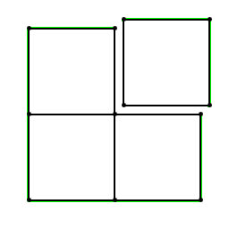
コンポーネントのセクション
コンポーネントはオプションで 1 個または 4 個 (2x2) のサブセクションに分割することができます。サブセクションは、ランドスケープの LOD (Level of Detail) を計算する際に基本単位となります。 頂点で表した各セクションのサイズも、2 の累乗でなければなりません。(最大値は 256 です)。これによって、異なる LOD レベルをテクスチャのミップマップに保存することが可能になります。このようにすることで、1 個のコンポーネント内のクワッド数が、2 の累乗から 1 を引いた数 (コンポーネント 1 個につき セクションが 1 個の場合) となるか、あるいは、2 の累乗から 2 を引いた数 (コンポーネント 1 個につき セクションが 4 個の場合) となります。 次の図では、1 個の独立したコンポーネントが 4 つのセクションを含んでいます。(全体の輪郭が緑で示されています)。各セクションは、9 個 (3x3) クワッドからできています。ここでも、セクションどうしが接している部分の頂点が、複製されていると分かります。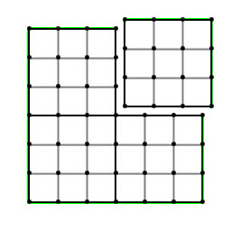
高さマップのサイズを計算する
お分かりのように、ランドスケープのサイズは、各セクションに含まれるクワッドの数、および、各コンポーネントに含まれるセクション数、ランドスケープ内にあるコンポーネントの数に基づきます。コンポーネントの数とそれらコンポーネントそれぞれの解像度が決まれば、ランドスケープ全体のサイズを計算するのは、簡単なことです。 以下はその計算手順の例です。 例 1まず、1 個のコンポーネントが 1 個のセクションからできていて、そのセクションが 64x64 個の頂点を含んでいる場合、このコンポーネントのサイズは 63x63 個のクワッドであることになります。たとえば、これらのコンポーネントがランドスケープに 10x10 個含まれているならば、ランドスケープには総計で 630x630 個のクワッドがあることになります。ここで、このようなランドスケープの高さをインポートするならば、631x631 個の頂点からなる高さマップにする必要があります。これは、存在するクワッド数よりも常に頂点の列が 1 つ多くなるためです (1x1 のクワッドは、4 つの頂点が必要となります)。したがって、631x631 が有効なランドスケープのサイズとなります。例 2
1 個のコンポーネントを 4 個のサブセクションに分割した場合、各セクションが 64x64 個の頂点からできています。すなわち、各セクションは 63x63 個のクワッドからなり、各コンポーネントは 126x126 個のクワッドから構成されることになります。このようなコンポーネントが 32x32 個あるならば、縦横各方向に総計 126 * 32 = 4032 個ずつのクワッドがあることになります。したがって、ランドスケープ総計では、4033x4033 個の頂点があることになります。上記例では正方形のランドスケープを扱いました。しかし、正方形ではないランドスケープを作成することも可能です。たとえば、最初の例では、10x10 は決まったものではありません。各コンポーネントに 63 個のクワッドがあるとして、AxB 個のコンポーネントからなるランドスケープを作ることができ、そのトータルのサイズは、頂点数で (A*63+1 , B*63+1) となります。
パフォーマンスへの配慮
コンポーネントのサイズをとるか、コンポーネントの総数をとるかという問題は、パフォーマンス上のトレードオフです。コンポーネントのサイズが小さくなると、LOD の遷移が素早くなるとともに、より多くのテレインのオクルージョンが可能になります。ただし、サイズが小さくなると、より多くのコンポーネントが必要となります。 各コンポーネントではレンダリングスレッドの CPU 処理コストがかかります。また、各セクションでは描画コールが起きます。したがって、コンポーネントの数を最小限に抑える必要があるのです。最大のランドスケープについては、1024 コンポーネントという値が我々の最大値となっています。推奨されるランドスケープのサイズ
以下に多数列挙したサイズは、エリアを最大化しながらランドスケープ コンポーネントの数を最小化するものです。| 全体のサイズ (頂点) | セクションあたりのクワッド | コンポーネントあたりのセクション | コンポーネントのサイズ (クワッド) | トータルのコンポーネント |
|---|---|---|---|---|
| 4033x4033 | 63 | 4 (2x2) | 126x126 | 1024 (32x32 コンポーネント) |
| 2017x2017 | 63 | 4 (2x2) | 126x126 | 256 (16x16 コンポーネント) |
| 1009x1009 | 63 | 4 (2x2) | 126x126 | 64 (8x8 コンポーネント) |
| 1009x1009 | 63 | 1 | 63x63 | 256 (16x16 コンポーネント) |
| 509x509 | 127 | 4 (2x2) | 254x254 | 4 (2x2 コンポーネント) |
| 505x505 | 63 | 4 (2x2) | 126x126 | 16 (4x4 コンポーネント) |
| 255x255 | 127 | 4 (2x2) | 254x254 | 1 |
| 253x253 | 63 | 4 (2x2) | 126x126 | 4 (2x2 コンポーネント) |
| 127x127 | 63 | 4 (2x2) | 126x126 | 1 |
| 127x127 | 63 | 1 | 63x63 | 4 (2x2 コンポーネント) |
新たなランドスケープの作成
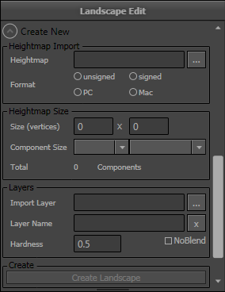
[ Heightmap Size ] (高さマップのサイズ) セクションが、新たなランドスケープを作成する際に使用されます。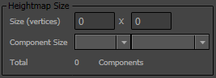
Size (vertices) (サイズ (頂点)) の値を、ランドスケープの適切なサイズにセットします。 Component Size (コンポーネントのサイズ) プロパティが、入力されたサイズに基づいて自動的に選択されます。 注記 : このサイズは、新たなランドスケープを作成するために以前に論じられた条件にしたがって、コンポーネントとセクションの作成を容易にすべきものです。トータルのコンポーネントは、0 以外の値になります。また、値が条件を満たした場合、[ Create Landscape ] (ランドスケープを作成する) ボタンが有効になります。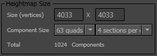
quads per section (セクションあたりのクワッド) と sections per component (コンポーネントあたりのセクション) から選べるオプションもありますが、選択には注意しなければなりません。コンポーネント数が劇的に上昇し、ビルド時間に影響を与えるのみならず、パフォーマンスにも影響を及ぼす可能性があるからです。 をクリックして、新たなランドスケープを作成します。これが完了すると、デフォルトのマテリアルが適用された平らな平面として、ランドスケープがビューポート内に表示されます。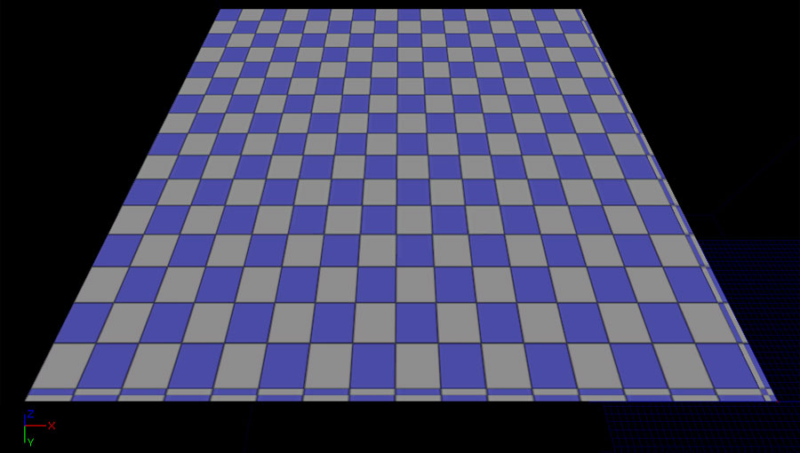
高さマップとレイヤーをインポートする
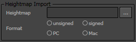
このファイルは、16 ビットの .raw ファイルか .r16 ファイルのどちらかでなければいけません。また、データの形式を指定できるオプションがあります。- Unsigned/Singed -
- PC/Mac -
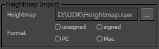
高さマップを指定すると、[ Heightmap Size ] (高さマップのサイズ) セクションが、その高さマップに合致する値で満たされます。また、[ Create Landscape ] (ランドスケープの作成) ボタンが有効になります。 高さマップだけをインポートする場合は、この時点で、 をクリックしてインポートします。 そうでない場合 (インポートすべきレイヤーがある場合) は、続いて以下のセクションに入ります。 レイヤーのインポート [ Layers ] (レイヤー) セクションを使用して、インポートすべきレイヤーのためのファイルを指定します。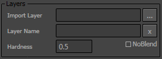
これらのファイルは、8 ビットの .raw ファイルか .r8 ファイルでなければいけません。複数のレイヤーファイルを指定してインポートすることが可能です。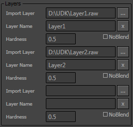
レイヤーファイルを選択したら、 をクリックしてインポートします。 インポート結果 インポートが完了すると、ランドスケープがビューポート内に表示されます。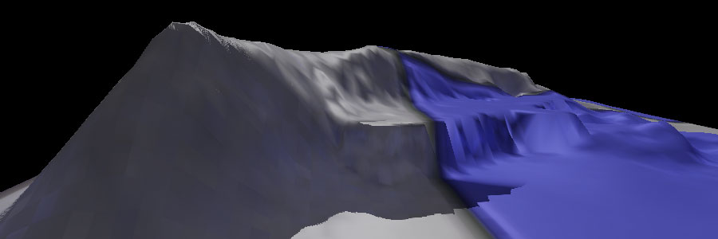
レイヤーが高さマップとともにインポートされた場合は、インポートされたレイヤーに適合する正しい設定を含む ランドスケープ マテリアル が割り当てられることによって、完全にテクスチャ化されたランドスケープを表示できるようになります。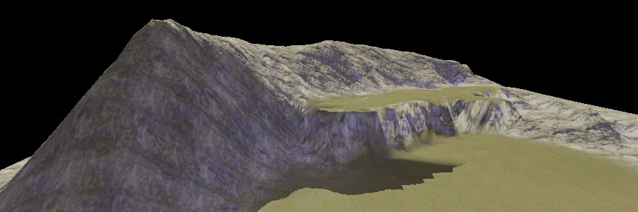
レガシー テレインをランドスケープに変換する
-
Max Component Size(最大コンポーネントサイズ) が、2 の累乗から 1 を減じたものを 1 倍ないしは 2 倍、3 倍したものであること。(例 : 1、2、3、6、7、9、14、15、21、30、45) -
Num Patches [X/Y](数 パッチ [X/Y]) が、Max Component Sizeの倍数であること。 -
Max Tessellation Level(最大テセレーションレベル) が 1 にセットされていること。
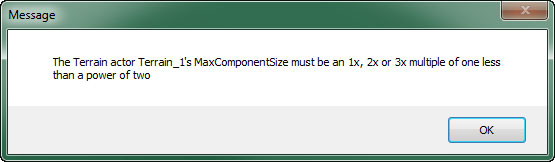
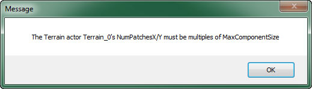
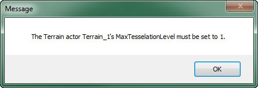
条件全部が満たされた場合は、テレインが変換プロセスを開始します。進行ダイアログが表示されます。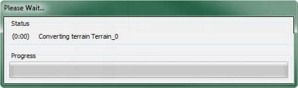